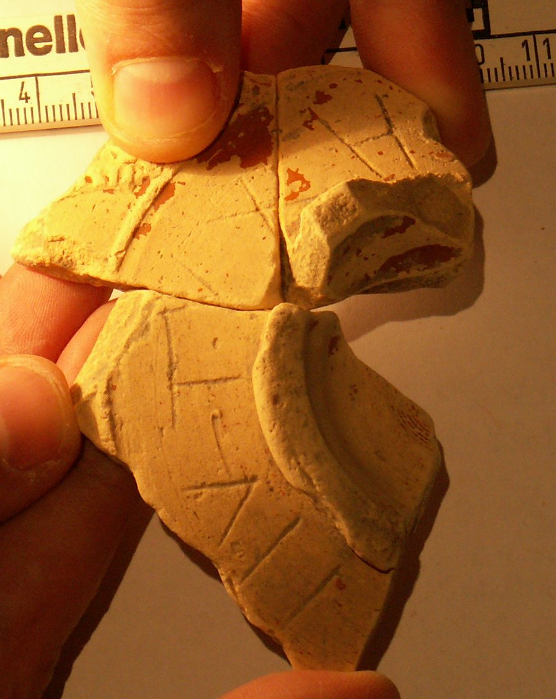

pompelo-029-eutiches
Grafito nominal «Eutyχηs[- - -]» (Pompelo, Plaza del Castillo, Pamplona, Navarra)
Pompelo (Pamplona, Navarra), Hispania citerior · s. II d.C.

Texto
Comentario
Es la primera referencia en Navarra a este cognomen griego. Sin embargo, se trata de un nombre relativamente común, incluso en grafitos en sigillata, ya que se conoce uno en Complutum y otro en Clunia. Este tipo de nombre remite a un posible origen servil del personaje. No es ni mucho menos el primer nombre griego conocido en Navarra: están el dispensator Athenio y su mujer Ant(onia) C(h)rysaeis, cuyo nombre y cargo hacen referencia a su condición de libertos imperiales (estudio actualizado por Javier Andreu), Asclepius Paternus en Barbarin, o un Hermetio y un Polydorus en Arróniz. En grafitos, se conoce en Arellano la inscripción de Pallas, Dionysius e incluso un Eut[-]chio (grafito: Eut[-]chionis), nombre derivado del que se presenta. Parece claro que la letra final es una S. Como opción más improbable, en el caso de que la inscripción terminase en I, podría tratarse de un imperativo del presente del verbo eutycheo, que podría traducirse como «que tengas suerte» o «que seas feliz». Sin embargo, los autores optan por la opción de que se trate de un nominal. Otra característica de esta inscripción es que el comienzo está realizado en caracteres latinos, mientras que las letras ji y eta del final están en griego.
Descripción
- Soporte
- Tres fragmentos de un fondo de 7 cm de Ø, que corresponde a una forma 37 decorada de T.S.H. Conserva restos de la parte inferior de la decoración. Pasta clara y restos de barniz rojo intenso.
- Disposición
- Localización del grafito: Junto al pie.
- Datación
- s. II d.C.
- Lugar de origen
- Pompelo (Pamplona, Navarra), Hispania citerior
- Hallazgo
- Excavación de la Plaza del Castillo de Pamplona (Gabinete Arqueológico Trama, 2001-2003), sector 3. Los estratos están revueltos (abundan las tumbas musulmanas del sector 3): la datación se basa en las formas cerámicas y el contexto es el de un barrio artesano.
- Ubicación actual
- Almacén de Arqueología del Gobierno de Navarra
Bibliografía
- M. Unzu; P. Ozcáriz Gil, «Grafitos nominales de la Plaza del Castillo de Pamplona», Los vascones de las fuentes antiguas: en torno a una etnia de la antigüedad peninsular (2009), pp. 499-512.